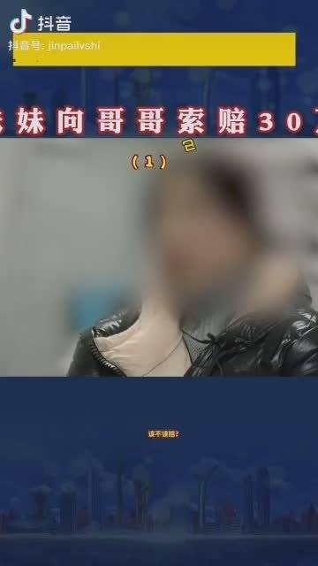

今晚跟闺女聊天，她还问我这个问题：如果女人喜欢做全职家庭主妇，为什么不可以呢？我跟她掰扯了半天，为什么不能选这条路。以后也要不断掰扯，这环境太容易给女孩子洗脑了。

Ada李力
2021-01-10

Ada李力
2021-01-10
跟#姣姣#简单聊了下三观。
哪三观？世界观价值观和人生观。简单来说，也就是你如何跟这个世界，如何跟别人，如何跟自己相处的规则。
我问姣姣，她认为这三观里最难的是哪一观的建立？闺女于是让我先解释一下，这三观的含义。
世界观就是这个客观世界的运转规律，比如说赚钱是有规律的。你想成为富人，你学习成为富人的那些思维方式实践方法，OK，大概率最后你可以成为小富婆，这跟你靠苦读掌握学习方法，靠努力获得个好的考试成绩这种事情经过，没有什么两样。只是大富大贵需要运气，比如你认为可以靠学习努力成为世界首富，那就是想多了。
价值观说的是如何判断对错。一个杀人犯的价值观，跟一个好人的价值观，那肯定是不一样的。普通人通常也都知道什么是对的什么是错的，普通人之间区别开来的最大因素，是很多人知道什么是对的，但是不会按那对的来做，因为做对的事情比较艰难。就比如说我们知道抽烟喝酒不好，但烟酒两项是中国很大的税收来源呢。
人生观是说，你如何认知自己，你要怎么过完你这一生？
姣姣说当然是人生观最难。因为人生观没有标准答案，而且也没有别人的答案供你来拷贝。
我觉得闺女真是聪明呀。
哪三观？世界观价值观和人生观。简单来说，也就是你如何跟这个世界，如何跟别人，如何跟自己相处的规则。
我问姣姣，她认为这三观里最难的是哪一观的建立？闺女于是让我先解释一下，这三观的含义。
世界观就是这个客观世界的运转规律，比如说赚钱是有规律的。你想成为富人，你学习成为富人的那些思维方式实践方法，OK，大概率最后你可以成为小富婆，这跟你靠苦读掌握学习方法，靠努力获得个好的考试成绩这种事情经过，没有什么两样。只是大富大贵需要运气，比如你认为可以靠学习努力成为世界首富，那就是想多了。
价值观说的是如何判断对错。一个杀人犯的价值观，跟一个好人的价值观，那肯定是不一样的。普通人通常也都知道什么是对的什么是错的，普通人之间区别开来的最大因素，是很多人知道什么是对的，但是不会按那对的来做，因为做对的事情比较艰难。就比如说我们知道抽烟喝酒不好，但烟酒两项是中国很大的税收来源呢。
人生观是说，你如何认知自己，你要怎么过完你这一生？
姣姣说当然是人生观最难。因为人生观没有标准答案，而且也没有别人的答案供你来拷贝。
我觉得闺女真是聪明呀。
Ada李力
2021-01-10


Ada李力
2021-01-10
回复@yiluoseraph:月亮发光吗？即使是喜欢的作家，没常识也没必要这么为他着想。//@yiluoseraph:回复@yiluoseraph:往好处想，可能以为太阳和月亮都是自发光的//@Ada李力:这个比喻里，男性是太阳？女人是月亮的话，还是围着太阳转？
---:抱歉，作者已设置仅展示半年内微博，此微博已不可见。
Ada李力
2021-01-10
我看这个视频也是对这个男嘉宾印象深刻，杀人都能有人辩护是善意，都是男性缘故？//@你发现了一只星球怪兽:那个男嘉宾还狡辩这是善意？？？善意让人失去最佳治疗机会？？善意让人走向死路？？？？
@萨娜娅1号:
【哥嫂篡改妹妹癌症病例，两年后癌症已扩散，妹妹向哥哥索赔30万，该不该赔？】
要我说不该赔，应该直接按蓄意谋杀立案，然后侦查、提起公诉、判决。 萨娜娅1号的微博视频
萨娜娅1号的微博视频
要我说不该赔，应该直接按蓄意谋杀立案，然后侦查、提起公诉、判决。

13万次播放
02:10
Ada李力
2021-01-10
是的哈//@shenwen52:现在的小孩都特别会哄人开心。可能因为爹妈太难搞。